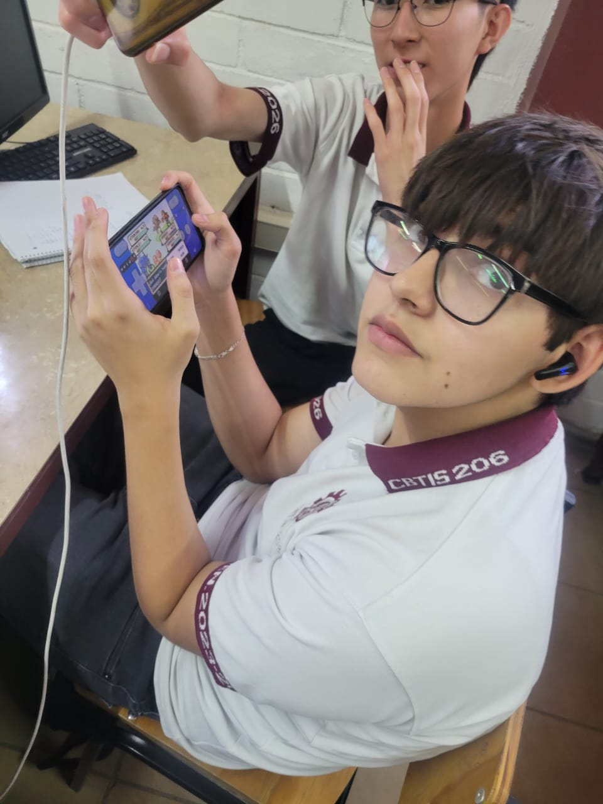

¿Quienes Somos?
Contreras & Catalán S.A. de C.V. es una empresa líder en el sector de [indicar sector: construcción, ferretería, automotriz, etc.], dedicada a ofrecer soluciones integrales y de alta calidad para satisfacer las necesidades de nuestros clientes. Con más de [X años] de experiencia en el mercado, hemos consolidado una reputación sólida y confiable, basada en el compromiso con la excelencia, innovación y el servicio personalizado. Nuestra misión es proporcionar productos y servicios que optimicen el rendimiento de proyectos y mejoren la experiencia de nuestros clientes. Trabajamos con materiales de la más alta calidad y las mejores prácticas en la industria, asegurando siempre la satisfacción de quienes confían en nosotros.